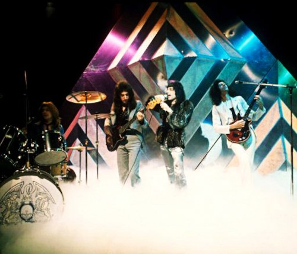

1974년, Top of the Pops 출연 당시
4인조로 클럽과 대학 공연을 다니다가 위에서도 언급했던 트라이던트와 계약을 맺은 퀸은 한참 뒤 1973년 1집 Queen을 발매하게 되었다. 앨범은 상업적으론 시원찮았지만 평론가들로부터는 꽤나 괜찮은 평가를 받았고, 빌보드 차트 83위에 오르는 소소한 이변을 거두기도 한다. 이후 밴드는 'Mott the Hoople'이라는 밴드의 투어 오프닝 밴드를 맡게 되는데, 덕분에 팬클럽이 생기거나 앨범 판매량이 오르는 등의 많은 주목을 받게 되었지만 이때부터 이후 고질적인 문제가 되는 언론과의 갈등이 생기기 시작했다.
이듬해 1974년, 밴드는 2집 Queen II를 발매하게 되는데, 이미 꽤나 이름을 알린 그들은 이 앨범에서 첫 히트곡 'Seven Seas of Rhye'를 배출하게 되었고, 앨범 차트에서도 작은 성과를 내는 등 상업적으로는 분전했지만, 음악적으로는 "글램락의 찌꺼기(...)다", "여기서 퀸이 더 발전한다면 내 모자를 먹어보이겠다" 먹어라 꼭 먹어라......는 등 혹평 일색이었다. 그러나 호평을 던진 평론가들도 많았으며, 이후 퀸의 이름이 알려지며 재평가되었다. 퀸 마니아들에게 그 유명한 A Night at the Opera보다 더 훌륭한 작품이라는 지지를 얻기도 하는 앨범.
이후 브라이언의 건강 악화로 잠시 난항을 겪었으나 우여곡절 끝에 동년 하반기 싱글 Killer Queen이 발매되어 UK 차트 2위라는 성공을 거두었고, 이어서 발매한 3집 Sheer Heart Attack까지 상업적인 성공을 거두며 승승장구하기 시작했다.
하지만 3집 투어가 성황리에 끝난 뒤, 소속사 트라이던트와의 갈등이 심각해지는데, 그들과 맺은 계약은 애초에 문제가 많았다. 대표적으로 퀸의 음반 판권에 관한 일체의 권리를 트라이던트에 넘긴다는 내용. 이 때문에 밴드는 음반 판매량과는 관계없이 정해진 보수만을 받게 되었다. 문제는 그 정해진 보수가 20 파운드, 원화로 대략 4만원. 결국 협상 끝에 60 파운드로 인상받았으나, 문제가 많은 건 매한가지였다. 그렇게 3집 앨범과 그 싱글이 히트했음에도 멤버들은 계속 거지 신세일 수밖에 없었다. 결국 법적 분쟁 끝에 퀸은 트라이던트를 나오게 되었고, 엘튼 존의 매니저였던 존 리드(John Reid)와 만나 EMI와 직속 계약에 성공한다.